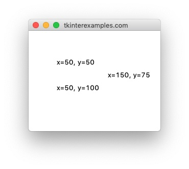
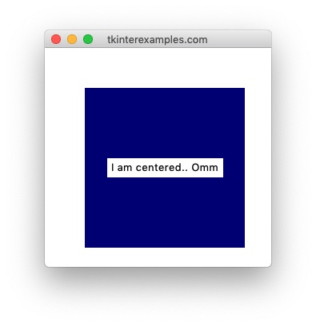
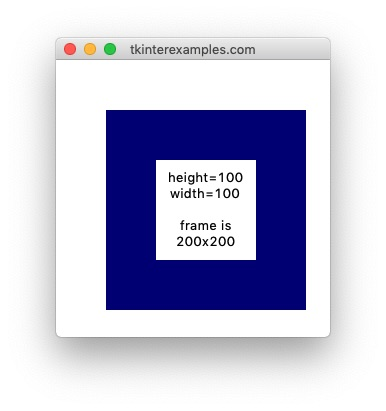
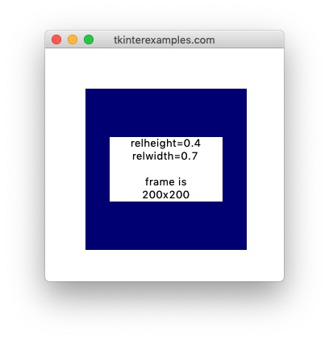

Place
The place geometry manager offers the most precision in element placement out of the
three package managers however it has a much smaller set of use cases as it can create a lot of headaches
to get things into the proper shape. For static window applications (no resizing) it can be a good
option. We would generally advise against using it unless you're an advanced user that knows they need it
for their purposes (creating a custom geometry manager for instance).
Position #
To define the position of elements using the place geometry manager we have two options:
absolute position aand relative position. We can also combine these for some utility. These measurements
are always relative to the widget's parent.
Absolute Position #
To use absolute positioning we provide the x= and y= attributes to
.place() .
import tkinter root = tkinter.Tk() tkinter.Label(root, text="x=50, y=50").place(x=50, y=50) tkinter.Label(root, text="x=50, y=100").place(x=50, y=100) tkinter.Label(root, text="x=150, y=75").place(x=150, y=75) root.mainloop()
Relative Position #
To use relative positioning we provide the relx= and rely= attributes to
.place() .
import tkinter root = tkinter.Tk() # Add a frame frame = tkinter.Frame(root, height=200, width=200, bg="navy") frame.place(x=50, y=50) tkinter.Label(frame, text="relx=0, rely=0").place(relx=0, rely=0) tkinter.Label(frame, text="relx=0.4, rely=0.6").place(relx=0.4, rely=0.6) tkinter.Label(frame, text="relx=1, rely=1").place(relx=1, rely=1) root.mainloop()

Notice that in the above example we cannot see the last label. This is because by default the
anchor attribute is set to NW. This means the element's top left corner is touching the
bottom right corner of our frame.
Centering #
Centering elements with .place() is rather simple:
import tkinter root = tkinter.Tk() # Add a frame frame = tkinter.Frame(root, height=200, width=200, bg="navy") frame.place(x=50, y=50) tkinter.Label(frame, text="I am centered.. Omm").place(relx=0.5, rely=0.5, anchor=tkinter.CENTER) root.mainloop()
Size #
Similar to Position, we have two ways of defining the size of an element, absolutely and relative to its parent.
Absolute Size #
Size can be set absolutely using the height and width options on the package
manager.
import tkinter
root = tkinter.Tk()
# Add a frame
frame = tkinter.Frame(root, height=200, width=200, bg="navy")
frame.place(x=50, y=50)
label = tkinter.Label(frame, text="height=100\nwidth=100\n\nframe is\n200x200")
label.place(height=100, width=100, relx=0.5, rely=0.5, anchor=tkinter.CENTER)
root.mainloop()

Relative Size #
Size can be set relatively using the relheight and relwidth options on the
package manager.
import tkinter root = tkinter.Tk() # Add a frame frame = tkinter.Frame(root, height=200, width=200, bg="navy") frame.place(x=50, y=50) label = tkinter.Label(frame, text="relheight=0.4\nrelwidth=0.7\n\nframe is\n200x200") label.place(relheight=0.4, relwidth=0.7, relx=0.5, rely=0.5, anchor=tkinter.CENTER) root.mainloop()